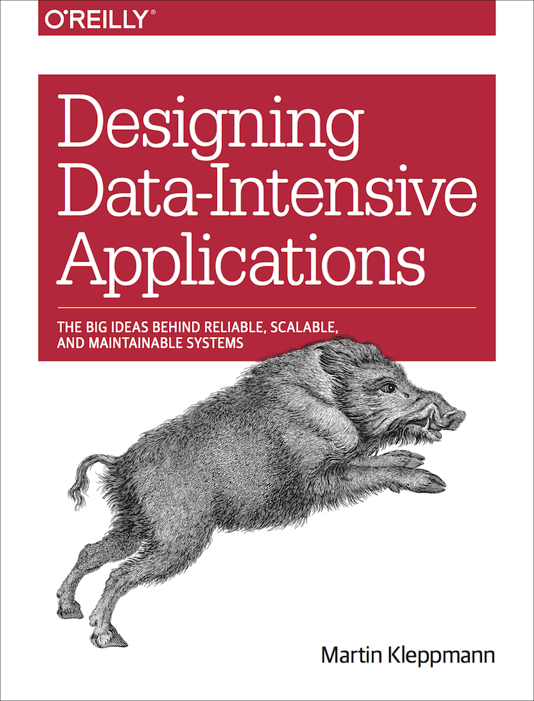

Generic N-Dim
R-Tree Explorations
or how I learned to calm the hyperspatial index
Feb 17, 2015
All our wisdom is stored in the trees.
— Santosh Kalwar
opening notes
- this is not complete
- more of a chance to dig into shapeless than look in depth at R-Trees (at least initially)
- just having some fun, please join me
exploration inspiration
“Designing Data-Intensive Applications” by Martin Kleppmann (recommended)

how do we find the needle in the haystack?
- could scan through the whole stack
- maybe there’s something faster
- B-Tree to the rescue

wait, we want to index our data over multiple dimensions
- could get part of the way there with a B-Tree but what about a range query over both dimensions?
- R-Tree to the rescue

R-Tree Overview
- spatial n-dimensional index

- variants: M-Tree, X-Tree, Hilbert R-tree
- sounds useful, tell us more…
how bout some code
scala> trait Data2D {
| case class Point[T](x: T, y: T)
| case class Entry[V, T](value: V, point: Point[T])
| case class Box[T](xLower: T, xUpper: T, yLower: T, yUpper: T) // inclusive
| sealed trait RTree[V, T]
| case class Empty[V, T]() extends RTree[V, T]
| case class Leaf[V, T](entry: Entry[V, T]) extends RTree[V, T]
| case class Node[V, T](
| box: Box[T], left: RTree[V, T], right: RTree[V, T])
| extends RTree[V, T]
| }
defined trait Data2D
scala> object data2D extends Data2D
defined object data2Dscala> import data2D._, spire._, algebra._
import data2D._
import spire._
import algebra._
scala> trait Ops2D {
| def initBox[T : Order](point1: Point[T], point2: Point[T]): Box[T]
| def expandBox[T : Order](box: Box[T], point: Point[T]): Box[T]
| def expandBox[T : Order](box1: Box[T], box2: Box[T]): Box[T]
| def withinBox[T : Order](box: Box[T], point: Point[T]): Boolean
| def overlaps[T : Order](box1: Box[T], box2: Box[T]): Boolean
| def add[V, T](rtree: RTree[V, T], entry: Entry[V, T]): RTree[V, T]
| def remove[V, T](rtree: RTree[V, T], entry: Entry[V, T]): RTree[V, T]
| def find[V, T](rtree: RTree[V, T], point: Point[T]): Option[Entry[V, T]]
| def contains[V, T](rtree: RTree[V, T], entry: Entry[V, T]): Boolean
| def search[V, T](space: Box[T]): List[Entry[V, T]]
| }
defined trait Ops2Dwhat if we have more than 2 dimensions?
scala> trait DataDynamicNDim {
| case class Point[T](terms: List[T])
| case class Entry[V, T](value: V, point: Point[T])
| case class Box[T](lowerBounds: List[T], upperBounds: List[T])
| sealed trait RTree[V, T]
| case class Empty[V, T]() extends RTree[V, T]
| case class Leaf[V, T](entry: Entry[V, T]) extends RTree[V, T]
| case class Node[V, T](
| box: Box[T], left: RTree[V, T], right: RTree[V, T])
| extends RTree[V, T]
| }
defined trait DataDynamicNDimTraveling through hyperspace ain’t like dusting crops, farm boy. Without precise calculations we could fly right through a star or bounce too close to a supernova, and that’d end your trip real quick, wouldn’t it?
— Han Solo, Star Wars Episode IV: A New Hope
I hear type systems perform calculations
and support a class of constraints
there’s a library that explores this space
shapeless : supercharged generic coding
Empty your mind, be formless. Shapeless, like water.
— Bruce Lee

let’s build a well typed Generic N-Dim R-Tree
shapeless Sized
scala> import shapeless._, ops.nat._
import shapeless._
import ops.nat._
scala> trait DataSizedNDim {
| case class Point[T, N <: Nat](terms: Sized[Seq[T], N])
| case class Entry[V, T, N <: Nat](value: V, point: Point[T, N])
| case class Interval[T](l: T, u: T)
| case class Box[T, N <: Nat](intervals: Sized[Seq[Interval[T]], N])
| sealed trait RTree[T, N <: Nat]
| case class Leaf[T, N <: Nat](point: Point[T, N]) extends RTree[T, N]
| case class Node[T, N <: Nat](
| bound: Box[T, N], left: RTree[T, N], right: RTree[T, N])
| extends RTree[T, N]
| }
defined trait DataSizedNDimperhaps, what if we want heterogeneous types for our dimensions?
shapeless HList
scala> trait DataHListNDim {
| case class Point[T <: HList](terms: T)
| case class Entry[V, T <: HList](value: V, point: Point[T])
| case class Box[T <: HList](lowerBounds: T, upperBounds: T) // inclusive
| sealed trait RTree[V, T <: HList]
| case class Empty[V, T <: HList]() extends RTree[V, T]
| case class Leaf[V, T <: HList](entry: Entry[V, T]) extends RTree[V, T]
| case class Node[V, T <: HList](
| box: Box[T], left: RTree[V, T], right: RTree[V, T])
| extends RTree[V, T]
| }
defined trait DataHListNDim
scala> object dataHListNDim extends DataHListNDim
defined object dataHListNDimlooks promising
note: intentionally postponed a few items
- balancing
- splitting
- performance
- heterogeneous distance function (similarity)
scala> import dataHListNDim._, shapeless.ops.hlist._, spire.math.{ min, max }, spire.implicits.{eqOps => _, _}
import dataHListNDim._
import shapeless.ops.hlist._
import spire.math.{min, max}
import spire.implicits.{eqOps=>_, _}
scala> trait OpsHListFunctions {
| object minimum extends Poly2 {
| implicit def default[T : Order] = at[T, T](implicitly[Order[T]].min)
| }
| object maximum extends Poly2 {
| implicit def default[T : Order] = at[T, T](implicitly[Order[T]].max)
| }
| object lte extends Poly2 {
| implicit def default[T : Order] = at[T, T](_ <= _)
| }
| object gte extends Poly2 {
| implicit def default[T : Order] = at[T, T](_ >= _)
| }
| object and extends Poly2 {
| implicit def caseBoolean = at[Boolean, Boolean](_ && _)
| }
| }
defined trait OpsHListFunctionsscala> trait OpsHListTypes { self: OpsHListFunctions =>
| type ZWMin[T <: HList] = ZipWith.Aux[T, T, minimum.type, T]
| type ZWMax[T <: HList] = ZipWith.Aux[T, T, maximum.type, T]
| type ZWLB[T <: HList] = {
| type λ[U <: HList] = ZipWith.Aux[T, T, lte.type, U]
| }
| type ZWUB[T <: HList] = {
| type λ[U <: HList] = ZipWith.Aux[T, T, gte.type, U]
| }
| type LFLB[T <: HList] = {
| type λ[U <: HList] =
| LeftFolder.Aux[
| ZipWith.Aux[T, T, lte.type, U]#Out,
| Boolean,
| and.type,
| Boolean]
| }
| type LFUB[T <: HList] = {
| type λ[U <: HList] =
| LeftFolder.Aux[
| ZipWith.Aux[T, T, gte.type, U]#Out,
| Boolean,
| and.type,
| Boolean]
| }
| }
defined trait OpsHListTypesscala> trait OpsHList extends OpsHListFunctions with OpsHListTypes {
| def initBox
| [T <: HList : ZWMin : ZWMax]
| (point1: Point[T], point2: Point[T])
| : Box[T] = Box(
| point1.terms.zipWith(point2.terms)(minimum),
| point1.terms.zipWith(point2.terms)(maximum))
| def expandBox
| [T <: HList : ZWMin : ZWMax]
| (box: Box[T], point: Point[T])
| : Box[T] = Box(
| box.lowerBounds.zipWith(point.terms)(minimum),
| box.upperBounds.zipWith(point.terms)(maximum))
| def withinBox
| [T <: HList, L <: HList : ZWLB[T]#λ : LFLB[T]#λ, U <: HList : ZWUB[T]#λ : LFUB[T]#λ]
| (box: Box[T], point: Point[T])
| : Boolean =
| box.lowerBounds.zipWith(point.terms)(lte).foldLeft(true)(and) &&
| box.upperBounds.zipWith(point.terms)(gte).foldLeft(true)(and)
| def overlaps
| [T <: HList, L <: HList : ZWLB[T]#λ : LFLB[T]#λ, U <: HList : ZWUB[T]#λ : LFUB[T]#λ]
| (box1: Box[T], box2: Box[T])
| : Boolean =
| box1.lowerBounds.zipWith(box2.upperBounds)(lte).foldLeft(true)(and) &&
| box1.upperBounds.zipWith(box2.lowerBounds)(gte).foldLeft(true)(and)
| }
defined trait OpsHListincomplete implementation for for sake of brevity
still with me? good, let’s speed this up a bit.
scala> import ndimrtree._, NDimRTree._
import ndimrtree._
import NDimRTree._
scala> val b1 = initBox(Point(1 :: HNil), Point(3 :: HNil))
b1: ndimrtree.Box[shapeless.::[Int,shapeless.HNil]] = Box(1 :: HNil,3 :: HNil)
scala> val b2 = initBox(Point(2 :: HNil), Point(4 :: HNil))
b2: ndimrtree.Box[shapeless.::[Int,shapeless.HNil]] = Box(2 :: HNil,4 :: HNil)
scala> val b3 = initBox(Point("a" :: HNil), Point("z" :: HNil))
b3: ndimrtree.Box[shapeless.::[String,shapeless.HNil]] = Box(a :: HNil,z :: HNil)
scala> import shapeless.test._
import shapeless.test._
scala> illTyped("""
| initBox(Point(1 :: HNil), Point("a" :: HNil))
| """)
scala> expandBox(b1, b2)
res1: ndimrtree.Box[shapeless.::[Int,shapeless.HNil]] = Box(1 :: HNil,4 :: HNil)
scala> illTyped("""
| expandBox(b1, b3)
| """)
scala> val t1: RTree[String, Int :: Double :: HNil] = RTree(List(Entry("z", Point(3 :: 1.7 :: HNil))))
t1: ndimrtree.RTree[String,shapeless.::[Int,shapeless.::[Double,shapeless.HNil]]] = Leaf(Entry(z,Point(3 :: 1.7 :: HNil)))
scala> illTyped("""
| val t1: RTree[String, Int :: Long :: HNil] = RTree(List(Entry("z", Point(3 :: 1.7 :: HNil))))
| """)how bout some property based tests
scala> import NDimRTreeOps._, org.scalacheck._, Arbitrary._, Prop._, Shapeless._
import NDimRTreeOps._
import org.scalacheck._
import Arbitrary._
import Prop._
import Shapeless._
scala> import scalaz.{ Ordering => _, _ }, Scalaz._, shapeless.{ :: => :×: }
import scalaz.{Ordering=>_, _}
import Scalaz._
import shapeless.{$colon$colon=>$colon$u00D7$colon}
scala> class NDimRTreeTest extends Properties("NDimRTree") {
| type V = String
| type N = Int :×: Double :×: String :×: HNil
| implicit def setEqual[T] = Equal.equalA[Set[T]]
| property("insert entry") = forAll { (r: RTree[V, N], e: Entry[V, N]) =>
| r.add(e).find(e.point) === e.some
| }
| property("build from list of entries") = forAll { entries: List[Entry[V, N]] =>
| RTree(entries).entries.toSet === entries.toSet
| }
| property("rtree.contains works") = forAll { (es: List[Entry[V, N]], e: Entry[V, N]) =>
| val rt = RTree(es)
| es.forall(rt.contains) && (rt.contains(e) === es.contains(e))
| }
| }
defined class NDimRTreeTestscala> object nDimRTreeTest extends NDimRTreeTest {
| property("rtree.search agrees with withinBox(box, point) filtering") = forAll {
| (es: List[Entry[V, N]], p1: Point[N], p2: Point[N]) =>
| val rt = RTree(es)
| val box1 = initBox(p1, p2)
| require(rt.search(box1).toSet === es.filter(e => withinBox(box1, e.point)).toSet)
| es.foreach { e =>
| val box2 = initBox(e.point, p2)
| require(rt.search(box2).toSet === es.filter(e => withinBox(box2, e.point)).toSet)
| }
| true
| }
| }
defined object nDimRTreeTestscala> nDimRTreeTest.check
+ NDimRTree.insert entry: OK, passed 100 tests.
+ NDimRTree.build from list of entries: OK, passed 100 tests.
+ NDimRTree.rtree.contains works: OK, passed 100 tests.
+ NDimRTree.rtree.search agrees with withinBox(box, point) filtering: OK, p
assed 100 tests.initial benchmarking:
plenty of room for improvement. just a first naive pass. confident that reasonable performance is achievable.
fun things explored
- generic programming with shapeless
- indexes
- R-Trees (but you already know that)
libraries utilized
- shapeless : Generic programming for Scala
- spire : Powerful new number types and numeric abstractions for Scala
- scalacheck : Property-based testing for Scala
- scalacheck-shapeless : Generation of arbitrary case classes / ADTs with scalacheck and shapeless
- archery : 2D R-Tree implementation in Scala
- leveraged for scalacheck tests and benchmarking
- thyme - microbenchmark utility for Scala
- scalaz - An extension to the core Scala library for functional programming
- utilized mostly for type-safe equality (looking forward to spending more time with cats)
- tut - doc/tutorial generator for scala
- sent the code used in this presentation to scalac
future explorations
- heterogenous distance functions
- specialization and/or miniboxing
- visualization with d3, perhaps leverage archery and scala-js
- turn this exploration into a usable and efficient library
- R-Tree variants, e.g. M-Tree, X-Tree, Hilbert R-tree
- distributed implementation
Thanks!
repo : rtree-explorations
slides : Generic N-Dim R-Tree Explorations